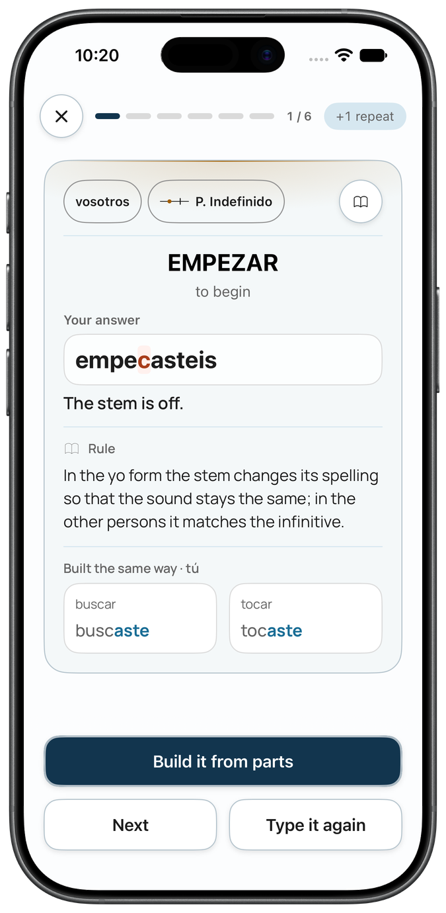

Spanish verb practice for iPhone · Spanish from Spain
Where’s the mistake?
comer · Futuro Simple · vosotros
comereis
The accent is missing.
comerInfinitive+éisEnding→ comeréis
The app shows you which part of the form is wrong and explains the rule.
7 days free on the yearly plan.
You type it.
You type the whole form yourself. Here are three answers, each wrong in one place: the stem, the ending, the accent.
The stem is off.
tenisteis
tuvisteis
tener · Indefinido
The ending is off.
hablastes
hablasteis
hablar · Indefinido
No accent here.
estudiásteis
estudiasteis
estudiar · Indefinido
The app breaks it down.
Not a lecture on the whole tense. One rule, about the mistake you made, and two examples.
comer + -éis → comeréis
In the futuro the accent sits only on the ending, in every person but nosotros: the stress falls on the last syllable. In -emos it falls on the next-to-last, so there is none.
Compare · tú
hablarásvivirás

What it looks like in the app
You typed empecasteis. The app marks the stem, explains the rule and shows forms that are built the same way. No points, no telling-off.
In your language.
English speakers trip up in their own places — and there, the explanations start from English. Here’s how the app explains the imperfecto.
ImperfectoEnglish 'played' covers both: 'we played yesterday' is one finished event — ayer jugamos, the indefinido. Where English could say 'used to' or 'was ...ing', Spanish usually takes the imperfecto — and for descriptions too: 'the house was big' — la casa era grande.
The hard ones come back.
A form you get wrong comes back in a few tasks. The app tracks each form on its own: verb, tense, person.
| yo | hablaré |
|---|---|
| tú | hablarás |
| él, ella, usted | hablará |
| nosotros | hablaremos |
| vosotros | hablaréis |
| ellos, ustedes | hablarán |
You practise every person. Vosotros isn’t skipped here: it has its own endings in every tense.
Back for review
- hablaréis
- fuisteis
- dijisteis
- teníais
- haréis
Plans
First 7 days free. We’ll remind you 2 days before they end.
No free trial. Cancel whenever you like.
Pay once, no subscription. Share it with your family through Family Sharing.
You can cancel a subscription at any time: iPhone Settings → your name → Subscriptions. Your progress is kept on your iPhone: cancelling or switching plans doesn’t erase it. Prices are in the App Store, in your local currency.
Is it for you?
It’s for you if
You know what the Indefinido and the Imperfecto are, but the forms still trip you up. You’re learning the Spanish spoken in Spain. You’d rather type the form yourself than pick it from a list.
It’s not for you if
You’re just starting Spanish. You want speaking practice or new vocabulary. You use Android.
Questions
Can I try it for free?
Yes. The yearly plan starts with 7 free days, and we’ll remind you 2 days before they end. The monthly plan has no free trial.
What’s the difference between a subscription and Lifetime?
A subscription renews on its own until you cancel it, and you can’t share it with your family. Lifetime is a one-off purchase, and you can share it with your family through Family Sharing.
How do I cancel?
At any time: iPhone Settings → your name → Subscriptions.
What happens to my progress if my subscription ends?
It all stays on your iPhone. The paid tenses close for practice. Subscribe again and you carry on where you left off.
I’m learning Latin American Spanish. Will it work for me?
Mostly. The forms in these five tenses are the same, with two differences. Vosotros isn’t used there — people say ustedes. And for ‘today’ or ‘this week’ Latin America tends to use the indefinido, while the app teaches the Spanish usage, the perfecto.
Which tenses does it cover?
Pretérito Indefinido, Pretérito Imperfecto, Pretérito Perfecto, Pretérito Pluscuamperfecto and Futuro Simple.
What language are the explanations in?
English and Russian. Where English and Russian speakers go wrong in different ways, the explanations are written separately: through the English tenses for English speakers, through verb aspect for Russian speakers.
How do I type accents?
Once you type a vowel, the app shows a row of accented vowels — tap the one you need. Or hold the vowel on the iPhone keyboard, as usual.
Do I need an internet connection?
Not for practice — that works offline. You need a connection to buy, and to send your answers if you’ve turned on “Help improve the app” yourself.
Which iPhone do I need?
Any iPhone with iOS 26 or later.
Learning the Spanish spoken in Spain? Here you practise vosotros alongside every other person.
Yearly with 7 days free · Monthly · Lifetime